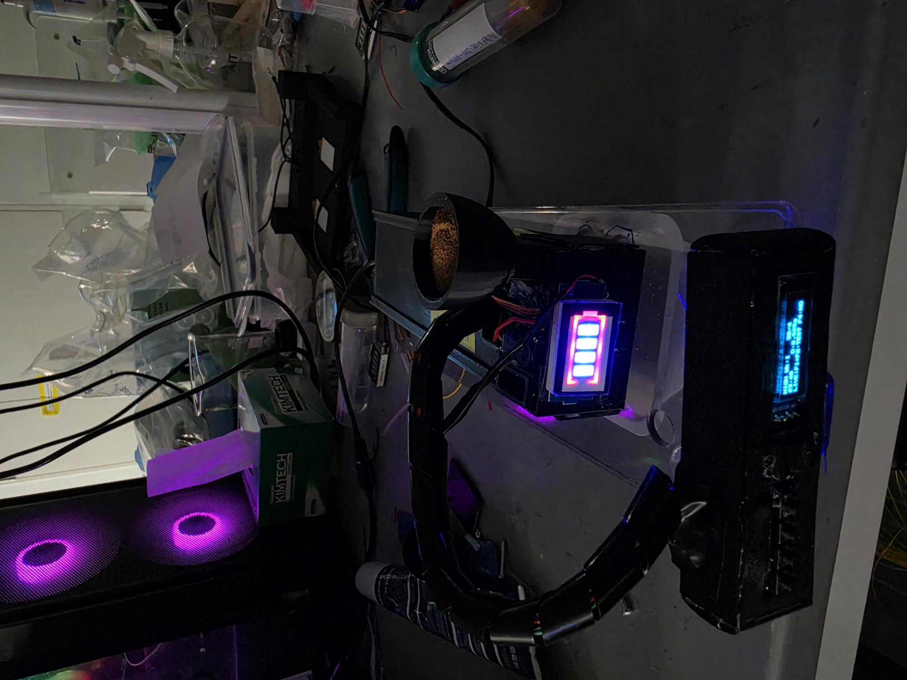
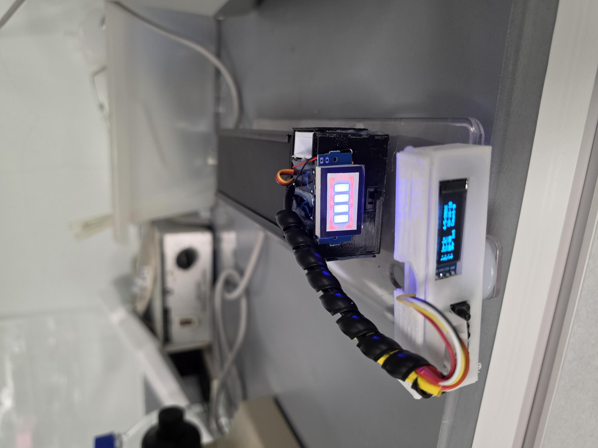
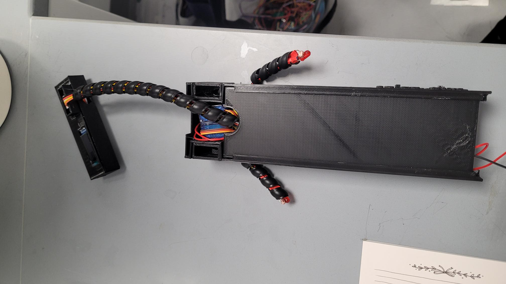
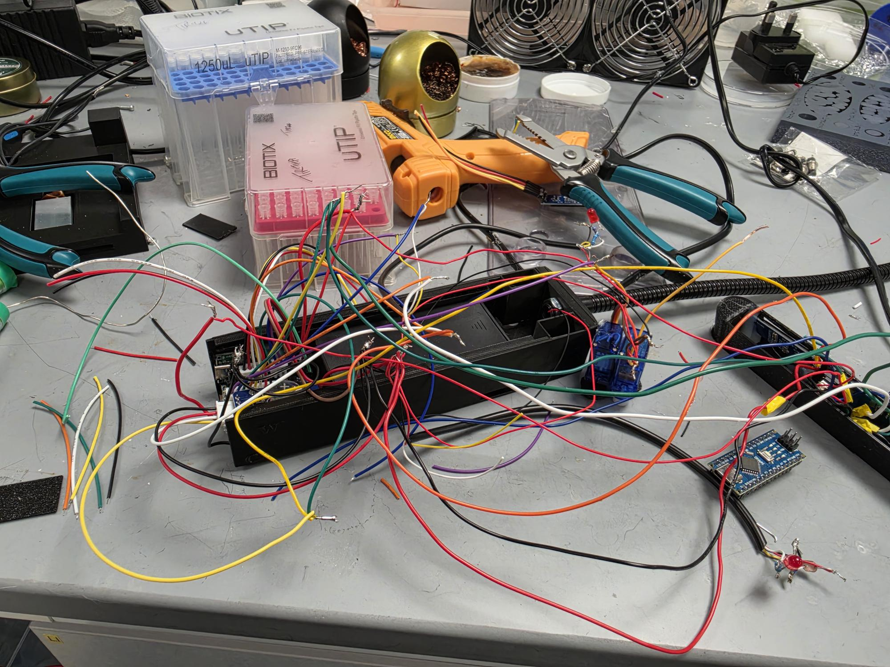
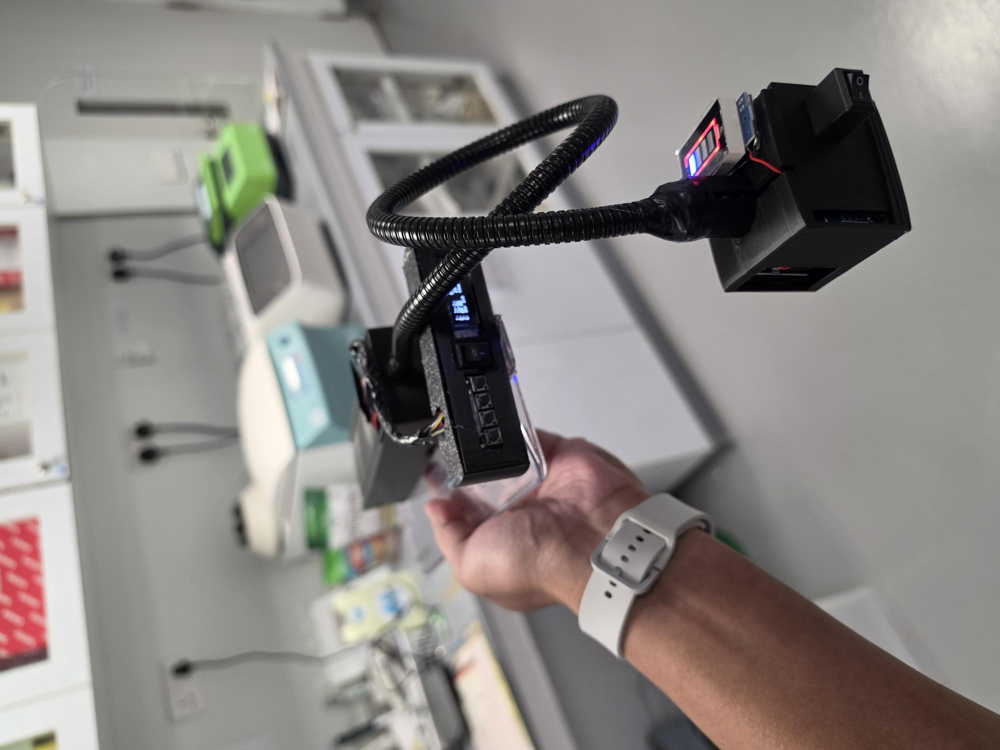
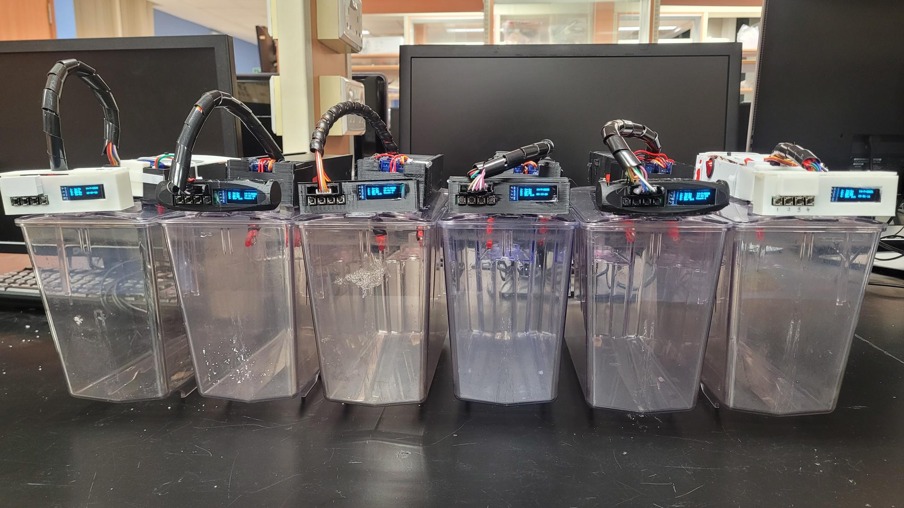
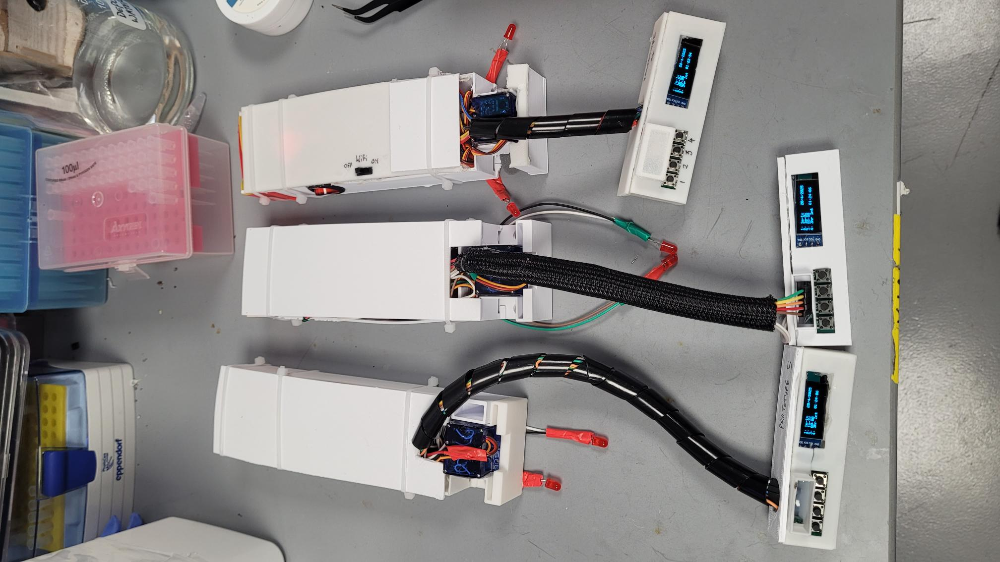
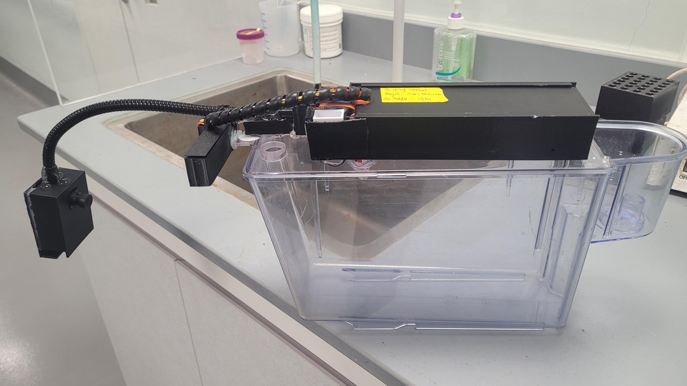
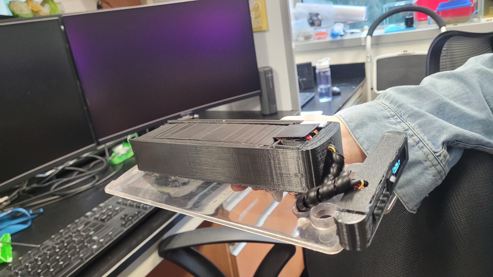

A gallery documenting the development, assembly, and deployment of the FISHER automated feeding and pulsed dispensing system. The FISHER is a custom-built, automated fish feeding and pulsed dispensing system designed for high-precision laboratory aquatic research. Utilizing 3D-printed enclosures and microcontroller-driven servos, it delivers exact dietary control for complex nutritional and reinforcement learning experiments. The system is highly scalable, capable of functioning as a single handheld unit or synchronized across an array of experimental tanks. Engineered for long-term autonomous deployment, it features deep-sleep power optimization, 18650 battery integration, and intuitive OLED status displays.

FISHERdelta system featuring a custom 3D-printed enclosure, a feed hopper, an active OLED battery indicator, and a battery indicator.

FISHERmain (prototype 3.0).

Top-down perspective of FISHERmain (prototype 4.0).

Behind-the-scenes look at the soldering and assembly process, highlighting the microcontroller, servo integration, and custom wiring.

Demonstration of a completed FISHERcam module with intergated camera capable of recording video directly into the system.

A scaled-up setup featuring six synchronized FISHER units mounted on individual transparent tanks for parallel feeding experiments.

Alternative white 3D-printed enclosures exposing the servo mechanisms, alongside their dedicated multi-button control panels.

A fully deployed FISHERcam unit mounted securely onto a laboratory tank, positioned for automated and precise pulsed dispensing.

Close-up profile of FISHERmain_v8.0.
Regular feeding under HighSD and LowSD diet.
FISHER main version in reinforcement learning experiment.